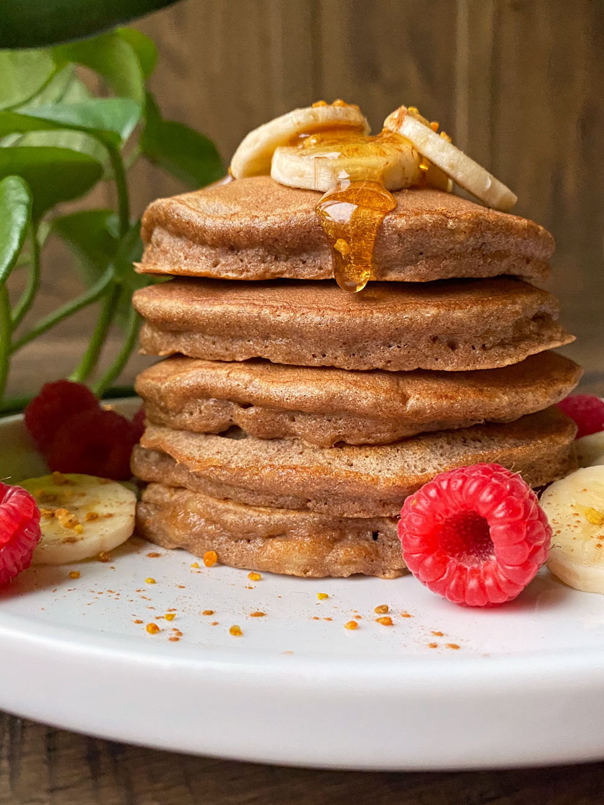

Gluten Free Pancakes

Paleo Banana Cassava Pancakes
These fluffy, Paleo Banana Cassava Pancakes are made with cassava flour, ripe bananas and eggs. Not only are these pancakes great for breakfast, but they're actually healthy! They are only sweetened with bananas, grain free, dairy free and kid approved.
Ingredients
- ripe banana
- eggs
- vanilla extract (optional)
- cassava flour
- cinnamon (optional)
- baking soda
- salt
Steps
- Peel banana and mash in a large mixing bowl.
- Mix in eggs and vanilla.
- Mix in remaining ingredients.
- Preheat frying pan by setting temperature to medium-low heat. Add oil.
- Pour ¼ cup batter on pan. Cover and cook on medium-low heat until bubbles form on top. Flip and cook until done. (Pancakes should be golden brown on each side.)
- Repeat step 5 until no more batter remains.